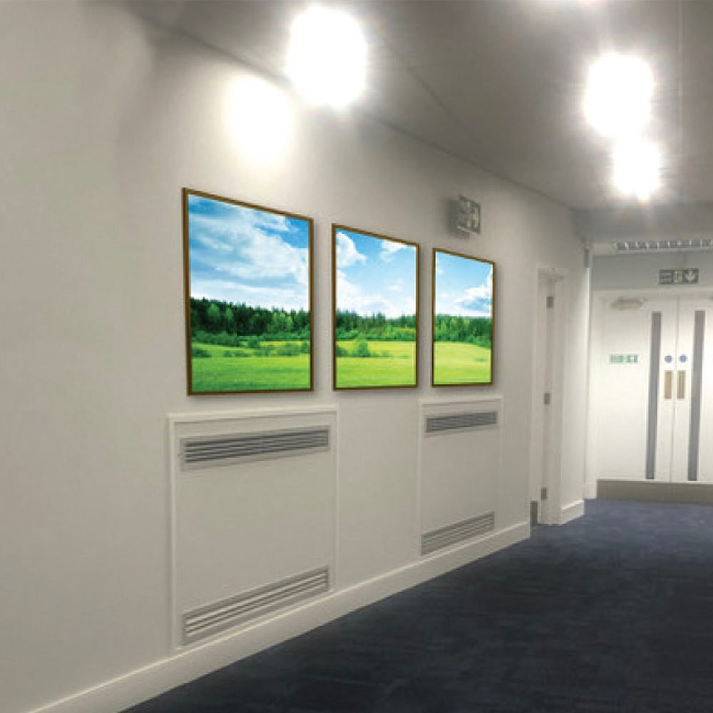
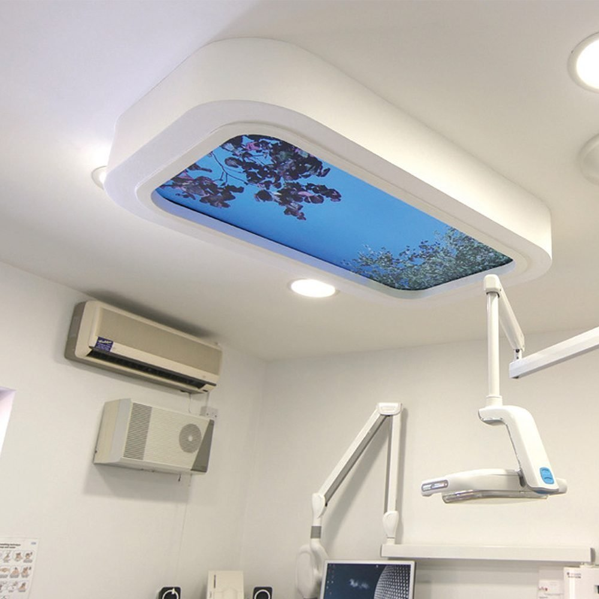
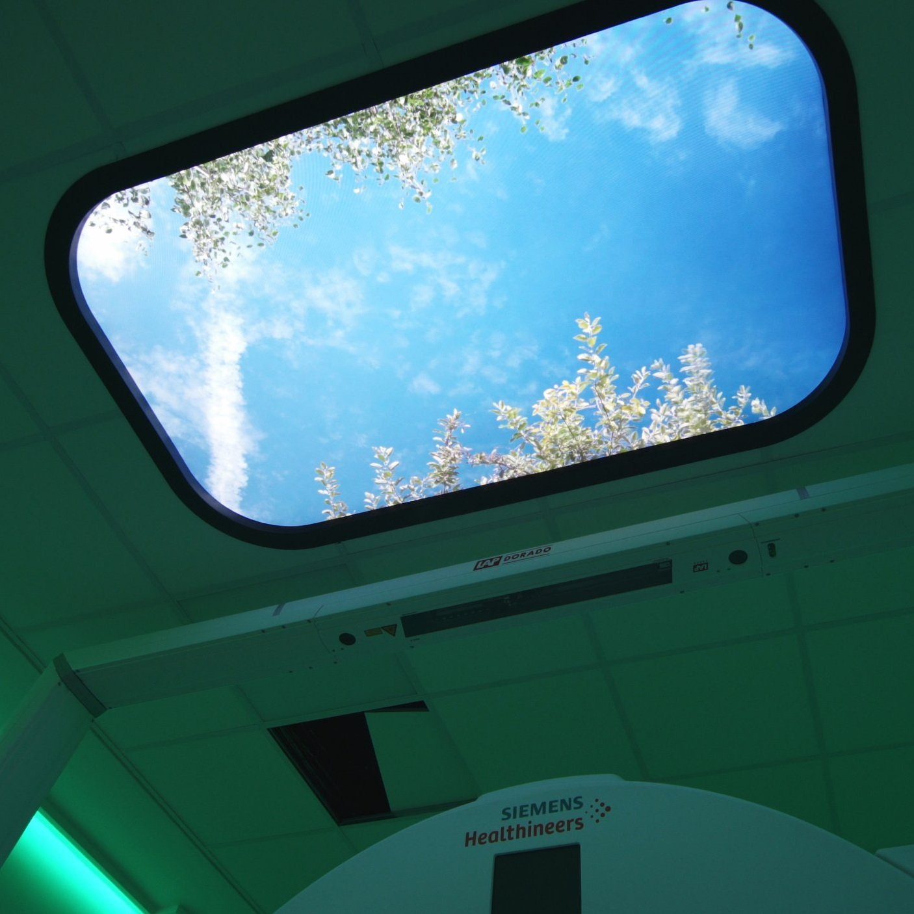
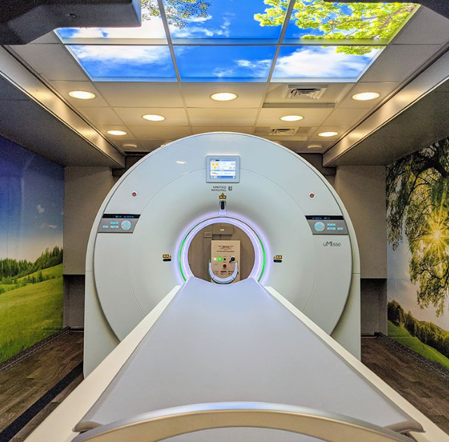
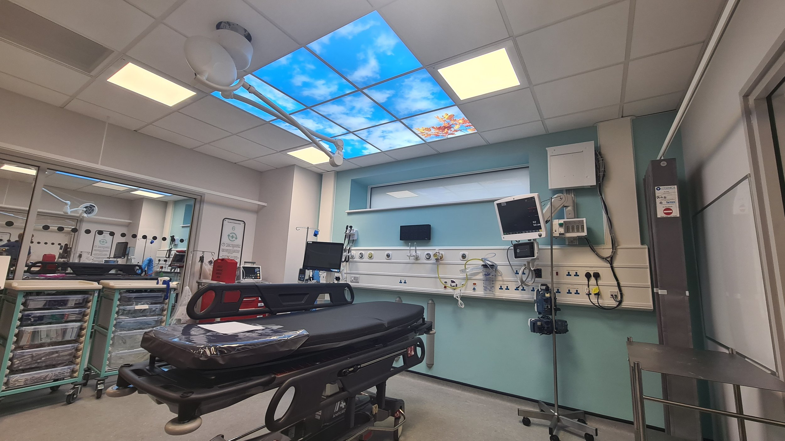

Living Skies™ & Windows
Immersive nature visuals for wards, treatment rooms, and recovery spaces.
Healthcare • Circadian • Biophilic
UK-manufactured digital ceilings and windows that bring nature indoors to reduce anxiety, support recovery, and elevate high-stress environments.

Immersive nature visuals for wards, treatment rooms, and recovery spaces.

Architectural statements that improve ambience while supporting wellbeing.

Day-cycle lighting profiles to support sleep quality and patient comfort.

“Patients need something uplifting to focus on during treatment and recovery. Our mission is to bring that connection to nature indoors.”
Allan Sinclair, Founder
Want a modern, calming environment in your healthcare or wellbeing space? Talk to Sky Inside UK.
+44 (0) 20 8798 9297
+44 (0) 7707 013746
180 Park Road, Keynsham, Bristol BS31 1AY